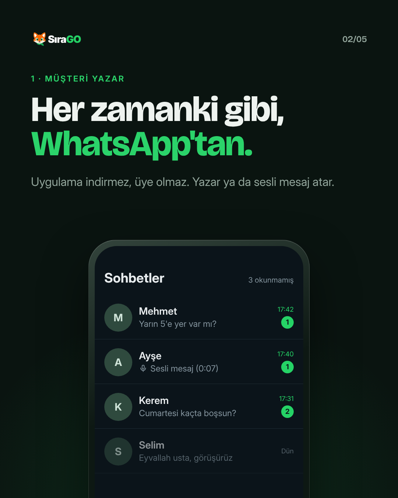
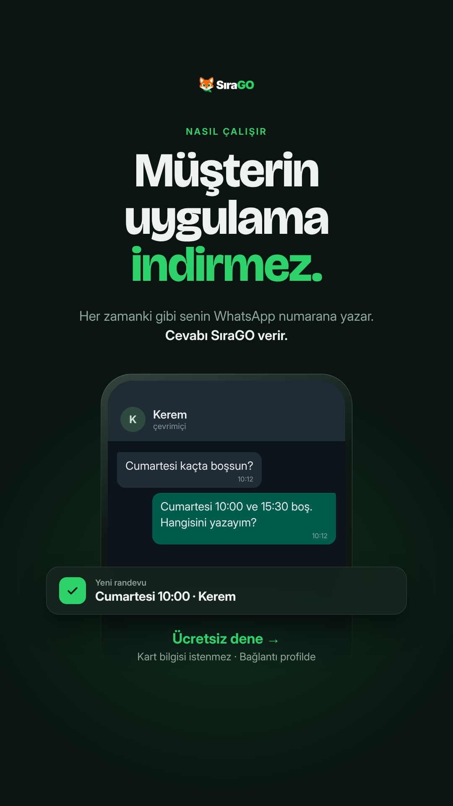

SıraGO · 3 örnek gönderi + story + Reels kapağı
1 · Carousel “Makas elindeyken randevuyu kim yazıyor?” (5 sayfa: gece → gece → gece → krem → yeşil)

2 · Güven (krem)
3 · Esnaf mizahı (tilki)
Story şablonu

Reels kapağı